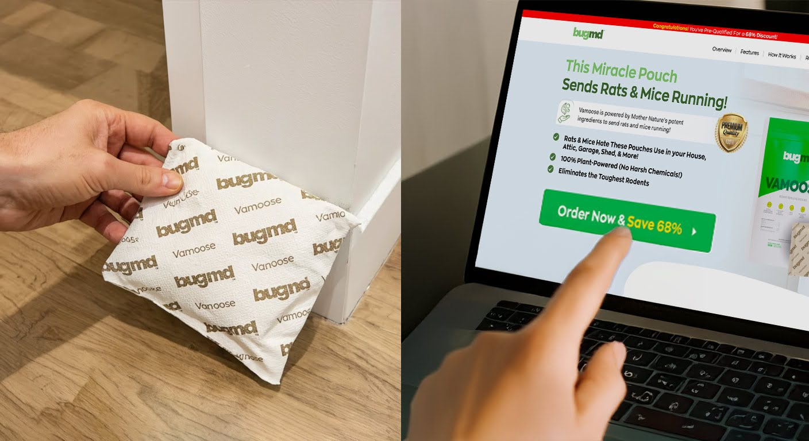
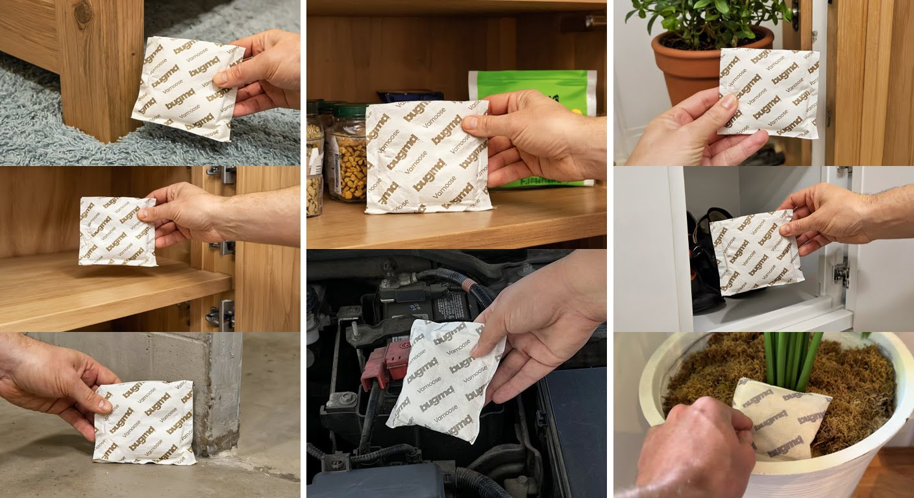
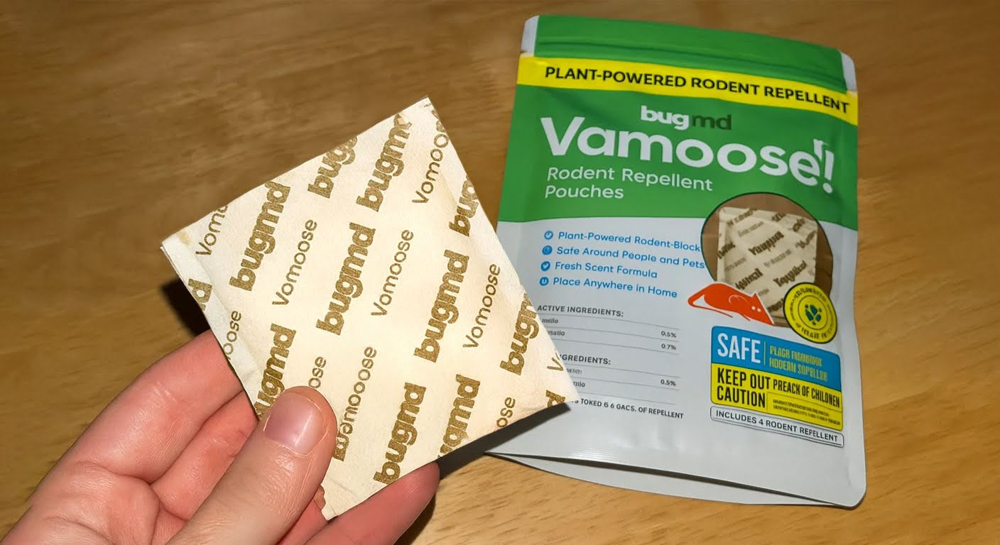

; ?>)
"I spend my days getting rid of pests for other people, but I couldn't get these disgusting & destructive mice out of my house.”
"For 15 years, I've been an exterminator. I've dealt with every bug you can imagine - roaches, bed bugs, spiders. But the one thing that was driving my wife Elena and I absolutely crazy? Mice getting into our kitchen and getting into our food, and the treats she baked.
Elena has always been passionate about baking. She'd spend hours perfecting her recipes, researching new techniques, and dreaming about opening her own bakery someday.
But these mice were also there. They would show up every single time she started to bake.
I'm telling you, it was so annoying. Elena would find mice droppings in her flour, footprints across the counters, and dirty dander inside her freshly baked cakes. As a pest control expert, I was frustrated that I couldn't solve this problem in my own home.
These disgusting little pests were slowly ruining Elena's favorite thing to do, and it was driving her nuts."
The Day The Mice Crossed the Line
"It's crazy how something that starts out so innocent can completely destroy your life.
At first, Elena would just find a handful of mice droppings here and there, especially when food was on the counter. Not a huge deal, right? But then the mice got worse…
She had to start cleaning the kitchen every single day, but the mice would still find their way into everything - her flour, her sugar, even chip bags and pasta boxes in our pantry.
Then came the morning that changed everything. Elena had just finished baking her famous chocolate chip cookies for our daughter's 8th birthday party.
My heart sank when I walked into the kitchen to grab my coffee and saw mice droppings all over the cookies. At that same moment, my daughter and her friends came running through the door, heading straight for the dessert.
I had to jump in front of the girls to stop them and Elena threw the entire batch away right in front of the kids. The heartbreak on my daughter's face was soul crushing.
"That's when it hit me - these weren't just annoying pests anymore. They were completely out of control."
"Being a pest control expert who can't protect his own family from bugs? That felt like a complete joke.
The embarrassment was eating me alive. Here I am, supposed to be the neighborhood pest expert, and my wife can't even bake without these disgusting invaders contaminating everything.
Have you ever felt like a complete failure at the one thing you're supposed to be good at? That's exactly how I felt watching Elena's passion for baking get destroyed by mice."
I Tried Mousetraps, Poisons, and Even Ultrasonic Devices
"I wasn't willing to sit on my hands and do nothing. That's when I started to look for something to help... But nothing really did.
Naturally, being an exterminator, I wanted to try everything in my arsenal. The first solution was heavy-duty mouse traps. Elena refused to let me use those dangerous contraptions in the kitchen where we eat, especially with our daughter around. She was right - who wants to deal with messy cleanup of dead bodies? Or a child's broken finger?
I tried poison baits... but having that poison spread around with my child in the house was just too dangerous.
Physical barriers and mouse-proofing seemed promising at first... I sealed up every crack and hole I could find around the house and didn't see mice for about a week. But then they found new ways into the kitchen like nothing had changed - turns out mice teeth are strong enough to chew through almost anything, and it's nearly impossible to cover every single entryway.
I even tried those ultrasonic repellers that are supposed to drive mice away with sound waves. Complete waste of money - the mice couldn't care less about those things.
The frustration was overwhelming. I would think every morning, 'What kind of pest control expert can't get mice out of his own kitchen?' It was humiliating."
My Dad's Best Friend Had The Secret All Along
"But then I got lucky... and I mean really lucky.
My dad's best friend Charles surprised me by stopping by one weekend. Charles had been in pest control for over 30 years before he retired.
I was pacing in my kitchen when Charles came in and saw me.
'You look stressed. What's going on?' he asked. So I told him about our mice nightmare.
Charles just chuckled. 'There's easier ways to handle mice than all that chemical stuff.'
He went to his truck and came back with a small pouch.
'Vamoose,' he said. 'Been using this for years. Works better than anything I ever sprayed.'
Now Charles's no fool - he built one of the most successful pest control businesses in the state. If he said something worked, I listened.
But honestly? A little pouch? I thought it sounded too simple. Turns out I was wrong."
- Vamoose uses something called 'Tri-Fusion Repel Matrix™' formula to repel mice.
- The Tri-Fusion Repel Matrix™ combines citronella, corn mint, and linseed oils that attack mice in three ways at the same time. And since it's made with plant-based oils, there are no harsh chemicals affecting you or your family.
How can an essential oil pouch be so effective? Well, the science actually makes perfect sense.
This Tri-Fusion Repel Matrix™ starts by using citronella oil. Which works by overwhelming a mouse's sense of smell, confusing and "blinding" them to their surroundings. This sabotages their ability to navigate.¹
At the same time, corn mint oil sets off a panic response in the rodent's brain, like what happens if a mouse smells the urine of a predator. This forces mice to run away thanks to the automatic release of panic hormones.²
Finally, linseed oil cranks the power of Vamoose's other ingredients to 100, acting as a multiplier while making the molecules stick around far longer. For long-term protection.
All you have to do is place your Vamoose pouches in strategic spots. Such as your garage, attic, or basement. To keep mice away. And unlike those other harsh chemical pesticides, it's safe* around kids and pets*."
*When it's used as directed.

"I can't believe how well this stuff actually works!
It's also so easy to use! Just place the pouch in strategic spots and replace it once a month - that's it!
Now, Elena can bake again without worrying about mice getting into her flour or ruining any other treats. For the first time in months, she's back to enjoying being in the kitchen.
It's been 2 months since we started to use Vamoose. We placed pouches where we had been seeing mice activity and they started staying away immediately. I haven't seen a single mouse or their droppings since!
At this point, I keep several pouches around the house so we're always prepared. I have one in the kitchen, one in my work truck, and I even keep extras to give to friends if they need it.
That's right, after 15 years as an exterminator, the best mouse solution I found wasn't in my truck full of chemicals - it was this Vamoose!"
Please Don't Waste $1,000s on Ruined Food & Fake Anti-Mice Solutions Like I Did… Get Vamoose Before It's Too Late
"Please, don't make the same mistake that I did!
I wish I could have saved myself the trouble and chosen Vamoose as my go-to before all that wasted food, money, and time.
Ever since my family started to use Vamoose, the mice haven't been a problem. I even recommended it to friends and neighbors!
Their experience was just as successful. From families dealing with kitchen invasions to people tired of expensive exterminator bills, this stuff works for everyone.
Elena has her baking passion back. Our daughter can also have birthday parties with zero worry about contaminated treats.
And I'm way less stressed knowing I found a solution that actually protects my family's kitchen without filling our home with toxic chemicals.
If you're dealing with mice – DON'T WAIT FOR IT TO GET WORSE.
You MUST try Vamoose. It's incredibly affordable and might be exactly what you need like it was for my family.
However, I learned that these sell out really fast during peak rodent season." Be sure to get Vamoose before they're gone. They are currently offering a limited-time 68% discount. Check to see if it's still available>>>
The Secret Behind Vamoose
- Vamoose uses three powerful plant-based oils that scientists have proven to be effective against mice and other rodents. The Tri-Fusion Repel Matrix™ formula combines citronella oil that overwhelms a mouse's sense of smell, corn mint oil that triggers panic responses in their brains, and linseed oil that acts as a multiplier for long-term protection.
- And here's what makes Vamoose different from any other essential oil product: because instead of using just one approach, the tri-fusion formula combines all three oils that work together to attack mice in three devastating ways at the same time.
- Citronella oil confuses and blinds them, corn mint oil triggers panic hormones forcing them to flee, and linseed oil amplifies the effects while extending protection.³
- These pouches are incredibly versatile - you can place them in your garage, attic, basement, anywhere mice might be hiding. Plus, unlike chemical sprays that you worry about using around your family, this plant-powered formula is safe around kids and pets!"
Thousands Of Happy Customers Are Living Mice-Free
If you're still not sure about Vamoose, just look at what real customers are saying. People everywhere are finally able to enjoy being in their homes again:
Don't Let Mice Ruin Your Kitchen. Reclaim Your Home Today
Finally, stop letting mice control your home.
If you’re on the fence, know this – there is a 30-day satisfaction guarantee.
Click the button below to visit their website and see if there’s any stock left. These pouches sell out FAST, especially during sales.

“Since I started using Vamoose I haven't seen a mouse. I purchased the glue traps, powder, and I continued to see a mouse running around the house but with Vamoose I haven't seen a mouse …I place them in every nook and cranny where I've seen mice. They're convenient and not at all messy.”
“For months I tried numerous remedies to get rid of mice. I'd catch them in traps (ugh!). I thought that I'd found (and secured) every method where they could be entering the apartment. They still returned....Until I tried VAMOOSE! It's been 2 weeks and I have not seen any mice or droppings! I had 4 packets, I've only used 2, and they've provided coverage though out my entire apartment. I am so happy with this product.”